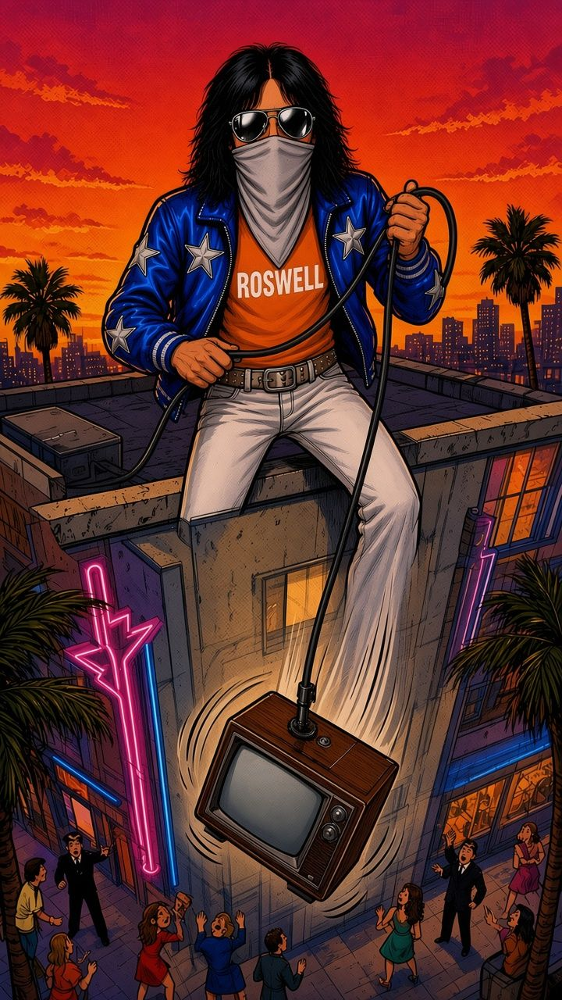

Hotel mayhem on the road, 1975–77 · as told by drummer Peter Criss*Mostly. Narration is sourced, bubbles with a name under them are exact quotes, and anything tagged “Joke!” is made up.
Swipe, tap or use the arrow keys to read →
“That night we stayed in the room and laughed all night long.”
No golfers were harmed. The real crossbow was confiscated; ours shot suction cups. The rubber-duck pool party, the dukes’ new noses and the gags along the way are our comic take on the chaos.
Ace Frehley (1951–2025) died on 16 October 2025. Rock on, Spaceman. Mind the deposit.
Sources: Peter Criss with Larry “Ratso” Sloman, Makeup to Breakup: My Life In and Out of KISS (Scribner, 2012), the road chapters (1975–77); quotes on the panels are his words, quoted exactly. Background: Ace Frehley, No Regrets (Gallery Books, 2011).
How to read this comic: captions are narration based on the sources above. Speech bubbles with a name under them are real words, quoted exactly. Anything tagged “Joke!”, the sound effects and the bubbles without a name are invented comic gags. The masked rocker is an invented stand-in, not a likeness of Ace; band mates, the business manager and the crew are shown as silhouettes or invented figures.
A non-commercial fan tribute to Ace Frehley (1951–2025). Not affiliated with KISS. Original art shows no likenesses, makeup designs or logos. Please do not try any of this at a hotel near you.